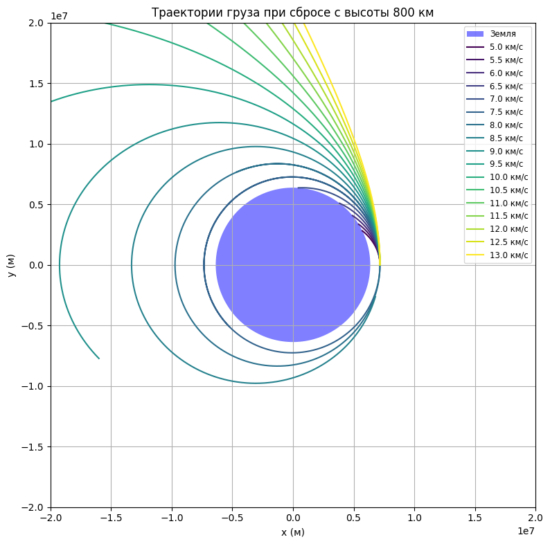
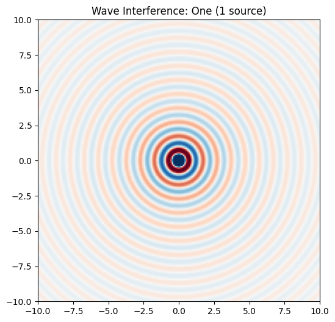
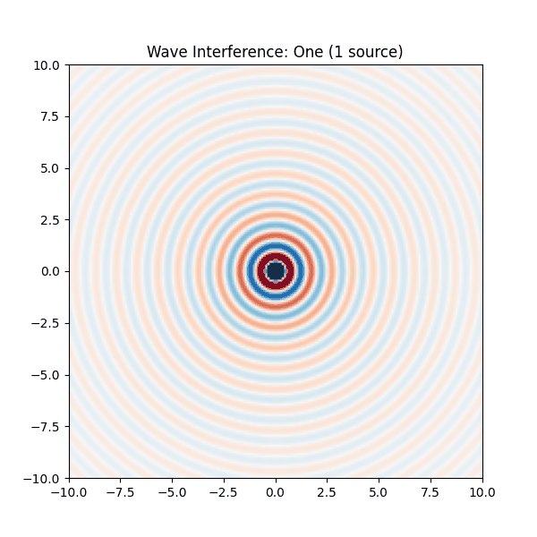

Problem 3
🌍 Trajectories of a Freely Released Payload Near Earth

📌 Motivation
When a spacecraft releases a payload near Earth, the path it follows depends on:
- Its initial position and speed
- The direction of motion
- The gravitational pull of Earth
Understanding these paths helps in planning:
- Satellite orbits
- Reentry to Earth
- Escaping Earth's gravity for deep space travel
🧠 Key Concepts
1. Newton's Law of Universal Gravitation
Every object attracts every other object with a force:
Where:
- \( F \) is the gravitational force
- \( G \) is the gravitational constant
- \( M \) is the mass of Earth
- \( m \) is the mass of the payload
- \( r \) is the distance from the center of Earth
This force always pulls toward the center of Earth.
2. Kinetic and Potential Energy
A payload has two key types of energy:
-
Kinetic Energy (moving):
[ KE = \frac{1}{2}mv^2 ] -
Gravitational Potential Energy:
[ PE = -\frac{G M m}{r} ]
The total energy determines the shape of the trajectory.
🚀 Types of Trajectories
🌐 Circular Orbit
- Speed is just right to balance gravity
- Path is a circle
- Total energy is constant and negative
🔁 Elliptical Orbit
- Speed is not perfectly balanced
- Payload moves closer and farther from Earth
- Total energy is still negative
🪃 Parabolic Trajectory
- Speed is just enough to escape Earth
- Total energy is zero
- It’s a boundary between orbit and escape
🛫 Hyperbolic Trajectory
- Speed is greater than needed to escape
- Payload leaves Earth forever
- Total energy is positive
🧮 Escape Velocity
The speed needed to leave Earth without falling back:
At sea level:
🔢 Numerical Simulation (Concept)
To simulate motion step-by-step:
- Set the initial position and velocity of the payload.
- At each time step:
- Compute the gravitational force: [ F = \frac{G M m}{r^2} ]
- Calculate acceleration:
[ a = \frac{F}{m} ] - Update velocity:
[ v_{new} = v + a \cdot \Delta t ] - Update position:
[ r_{new} = r + v \cdot \Delta t ]
- Repeat to track the trajectory shape (circular, elliptical, parabolic, hyperbolic)
📊 Visualization Goals
- A plot of Earth and the payload path
- Comparison of multiple initial speeds
- Labels for escape, reentry, and orbit scenarios
🌌 Real-World Applications
- Satellites must be released into elliptical or circular orbits
- Spacecraft aiming for other planets use hyperbolic trajectories
- Reentry capsules follow elliptical or parabolic paths
✅ Summary
| Condition | Trajectory Type | Total Energy |
|---|---|---|
| Low speed | Elliptical orbit | Negative |
| Just right speed | Circular orbit | Negative |
| Exactly escape speed | Parabolic path | Zero |
| Greater than escape speed | Hyperbolic path | Positive |
Problem 3: Motion of a Body in Earth's Gravitational Field
Problem statement: - Create a plot with the Earth drawn to scale. - Initial position: 800 km above Earth's surface (placed on the right-hand side of the plot). - Launch a body with various initial speeds: 5 km/s, 5.5 km/s, ..., up to 13 km/s. - Only gravitational interaction is considered.
Model: - Earth's radius: 6371 km. - Gravitational acceleration calculated using Newton’s law of universal gravitation. - Two-dimensional plane, launch point at (R_Earth + 800 km, 0). - Each trajectory shows motion of the body for a given initial velocity.
Result:

import numpy as np
import matplotlib.pyplot as plt
# Гравитационные константы
G = 6.67430e-11 # м^3 кг^-1 с^-2
M = 5.972e24 # масса Земли, кг
R_earth = 6.371e6 # радиус Земли, м
# Начальные условия
altitude = 800e3 # 800 км над поверхностью
r0 = np.array([R_earth + altitude, 0]) # начальная позиция справа от Земли
velocities = np.arange(5e3, 13.5e3, 0.5e3) # скорости от 5 до 13 км/с
# Временные параметры
dt = 1 # шаг по времени (с)
T = 10000 # общее время моделирования (с)
steps = int(T / dt)
# Создание графика
fig, ax = plt.subplots(figsize=(8, 8))
theta = np.linspace(0, 2 * np.pi, 500)
earth_x = R_earth * np.cos(theta)
earth_y = R_earth * np.sin(theta)
ax.fill(earth_x, earth_y, 'b', label='Земля', alpha=0.5)
# Симуляция для каждой скорости
colors = plt.cm.viridis(np.linspace(0, 1, len(velocities)))
for v0, color in zip(velocities, colors):
r = r0.copy()
v = np.array([0, v0])
traj_x, traj_y = [], []
for _ in range(steps):
r_mag = np.linalg.norm(r)
if r_mag < R_earth: # если груз врезался в Землю
break
a = -G * M * r / r_mag**3
v += a * dt
r += v * dt
traj_x.append(r[0])
traj_y.append(r[1])
ax.plot(traj_x, traj_y, label=f'{v0/1000:.1f} км/с', color=color)
# Оформление графика
ax.set_aspect('equal')
ax.set_xlim(-2e7, 2e7)
ax.set_ylim(-2e7, 2e7)
ax.set_xlabel('x (м)')
ax.set_ylabel('y (м)')
ax.set_title('Траектории груза при сбросе с высоты 800 км')
ax.legend(loc='upper right', fontsize='small')
plt.grid(True)
plt.tight_layout()
plt.show()
- The blue circle represents Earth.
- Each curve shows the trajectory for a specific launch speed (from 5 to 13 km/s).
- We can observe which speeds lead to orbits, collisions with Earth, or escape into space.
Wave Problem: Interference of Waves from Multiple Sources
Problem statement: - Demonstrate wave interference for one, two, and multiple sources. - Display the result as a heatmap and create an animation. - Source arrangements: - One centered source, - Two along the X-axis, - Three placed in a triangle. - Plot the results and create a gif animation.
Method:
- Wave equation used:
z(x, y, t) = A * sin(k * r - ω * t)
- The contribution from each source is summed.
- Grid from -10 to 10 in both x and y.
- Animation shows wave propagation and interference over time.
Result (animation):




{kind=link}
import numpy as np
import matplotlib.pyplot as plt
import matplotlib.animation as animation
# --- Grid Setup ---
size = 200
x = np.linspace(-10, 10, size)
y = np.linspace(-10, 10, size)
X, Y = np.meshgrid(x, y)
# --- Wave Function ---
def wave_source(X, Y, x0, y0, t, wavelength=1, speed=1):
r = np.sqrt((X - x0)**2 + (Y - y0)**2)
k = 2 * np.pi / wavelength
omega = k * speed
return np.sin(k * r - omega * t) / (r + 1e-6) # avoid division by zero
# --- Source Patterns ---
def get_sources(pattern):
if pattern == "one":
return [(0, 0)]
elif pattern == "two":
return [(-3, 0), (3, 0)]
elif pattern == "triangle":
R = 4
angles = np.linspace(0, 2*np.pi, 4)[:-1]
return [(R * np.cos(a), R * np.sin(a)) for a in angles]
elif pattern == "pentagon":
R = 5
angles = np.linspace(0, 2*np.pi, 6)[:-1]
return [(R * np.cos(a), R * np.sin(a)) for a in angles]
patterns = ["one", "two", "triangle", "pentagon"]
# --- Plot Setup ---
fig, ax = plt.subplots(figsize=(6,6))
heatmap = ax.imshow(np.zeros((size, size)), cmap='RdBu', vmin=-1, vmax=1, extent=(-10, 10, -10, 10))
title = ax.set_title("")
# --- Frame Update Function ---
def update(frame):
pattern = patterns[(frame // 20) % len(patterns)]
t = frame % 20
sources = get_sources(pattern)
Z = sum(wave_source(X, Y, sx, sy, t) for sx, sy in sources)
heatmap.set_data(Z)
title.set_text(f"Wave Interference: {pattern.capitalize()} ({len(sources)} source{'s' if len(sources) > 1 else ''})")
return heatmap, title
# --- Create Animation ---
ani = animation.FuncAnimation(fig, update, frames=80, interval=100, blit=False)
# --- Save GIF ---
ani.save("wave_interference.gif", writer="pillow")
plt.close()
print("✅ GIF saved as wave_interference.gif")
- Left plot: one source — circular wavefronts.
- Middle plot: two sources — clear interference pattern.
- Right plot: three sources in a triangle — complex interference structure.
Conclusion: - Orbital trajectories depend critically on initial velocity. - Wave interference clearly demonstrates the principle of superposition: the combination of phase and amplitude when multiple waves interact.